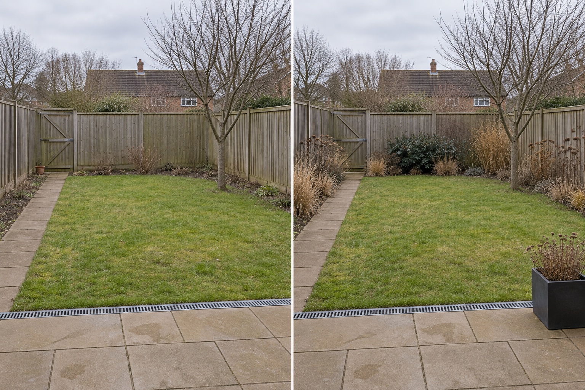

Place one dark anchor
A compact darker mass near the far boundary gives the eye a stable destination without turning the whole perimeter into a dense screen.
A garden remains readable in winter when a few forms still organize the view: one darker anchor, repeated standing stems, a visible tree framework, deliberate open ground and a clear route. Test those relationships first, then verify every real plant against the site and local climate.
Editorially reviewed September 9, 2026.
This AI-generated comparison is visual inspiration, not plant identification, a seasonal-performance promise, maintenance instruction, habitat assessment, climate recommendation, cost estimate or construction plan.

A compact darker mass near the far boundary gives the eye a stable destination without turning the whole perimeter into a dense screen.
Several groups of upright stems and seedhead-like forms create rhythm after softer seasonal growth has receded.
The central lawn, direct gate path and patio remain open, allowing the structural edges to read without filling every gap.
The Royal Horticultural Society’s Winter Garden at Hyde Hall foregrounds shape, structure and texture, including stems and skeletal seedheads. RHS guidance on winter seedheads also describes how some dried forms persist into winter. These examples support the visual framework, not the suitability or persistence of any pictured plant in another garden.
The leafless existing tree, rear gate, timber boundaries, concrete path, patio, rectangular lawn, channel drain, ground level, neighboring roof and camera position remain unchanged. The concept does not enlarge beds, reroute circulation, erase winter weather or claim that summer planting will look identical.
Use the same viewpoints in winter and summer. Mark which boundaries, trunks, paths, containers and plant forms remain visible.
List fixed hardscape, woody framework, evergreen mass, standing stems and temporary displays instead of treating all greenery as equal structure.
Check that retained stems, leaf litter, movable pots and future growth do not hide the gate route, drain or maintenance access.
Confirm climate, soil, moisture, light, mature size, toxicity, invasiveness, winter persistence and maintenance with authoritative local sources.
Avoid lining every boundary with one dark mass, relying only on bright containers, assuming seedheads will remain upright, blocking a winter-used path, hiding drainage under debris or selecting plants solely from a summer photograph.
Stop before removing established plants, pruning major woody structure, attaching supports, changing drainage or buying an unverified plant palette. Seek suitable local advice when tree condition, protected habitat, poisonous plants, invasive species, severe exposure or structural work may affect the plan.
Visible boundaries, paths, trunks, branching frameworks, evergreen or persistent masses, standing stems, seedheads and deliberate open space can all contribute. The useful mix depends on the real garden and local conditions.
No universal ratio is appropriate. A limited evergreen-like anchor can contrast with bare stems and open ground, but actual plant choices must suit the site and should not create unwanted shade or block access.
Not automatically. Some forms may persist and provide interest, while others may collapse, spread, obstruct routes or need different care. Verify the species and maintenance implications locally.
It can compare a visual direction using a winter source photo, but it cannot predict seasonal survival, leaf retention, flowering, weather damage or exact plant appearance.
Upload a level winter photo to compare restrained visual frameworks while keeping the real path, drain, boundaries and mature features visible.
AI-generated visualizations are concepts. Verify seasonal conditions, plant identity and suitability, access, drainage, safety and professional requirements before physical work.